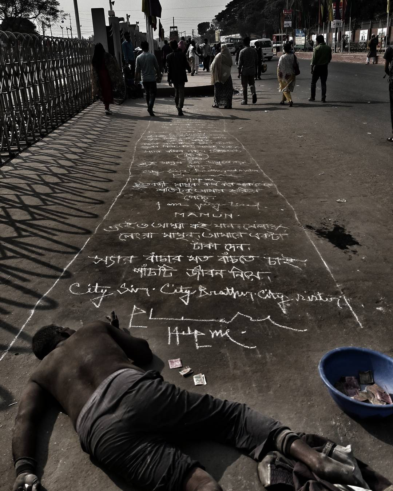
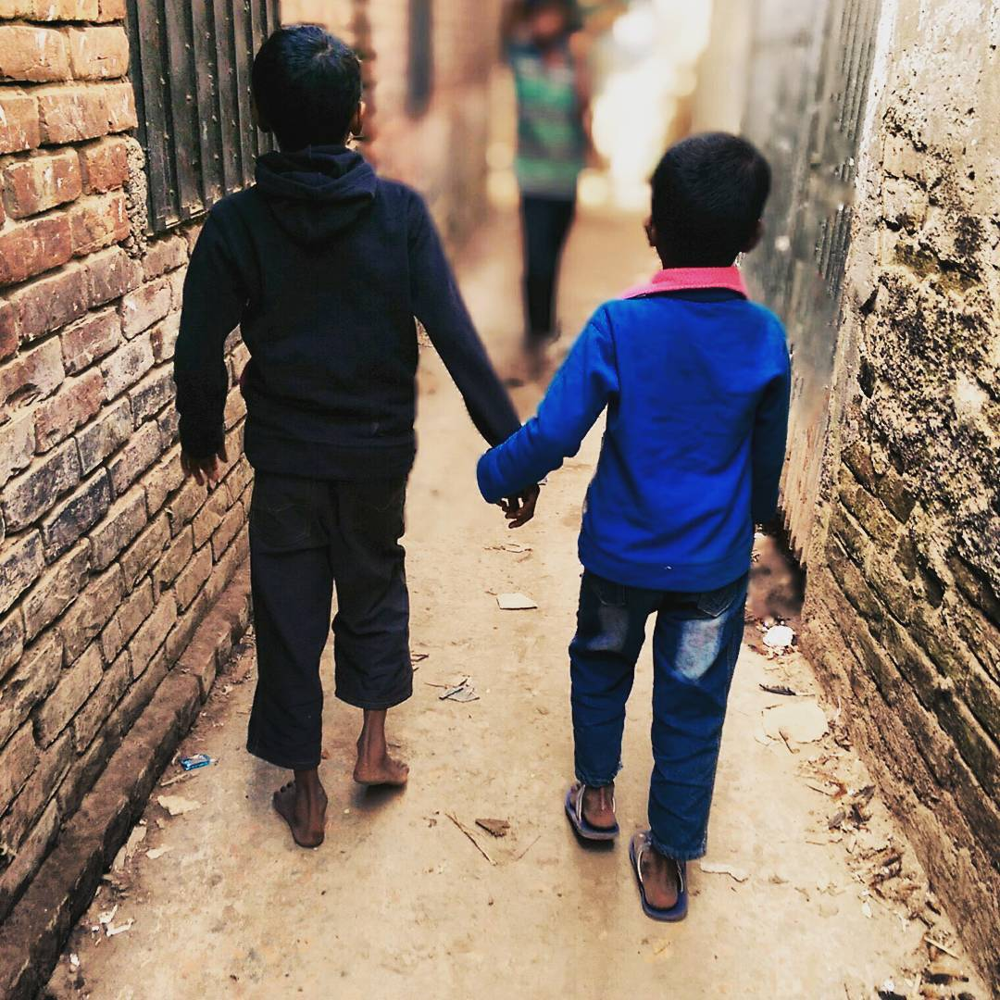
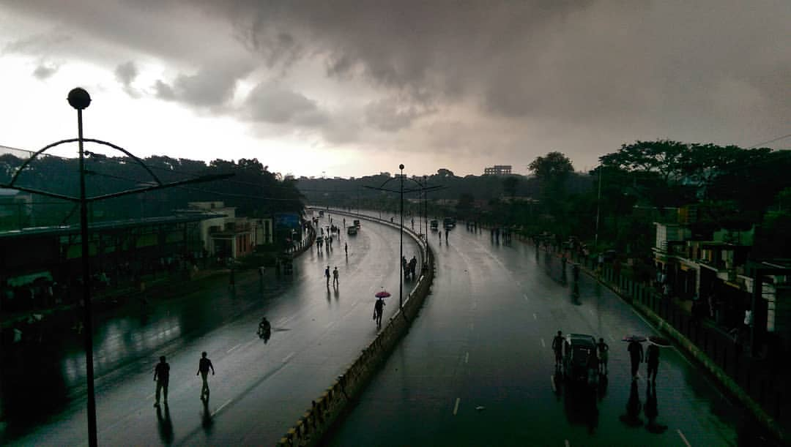
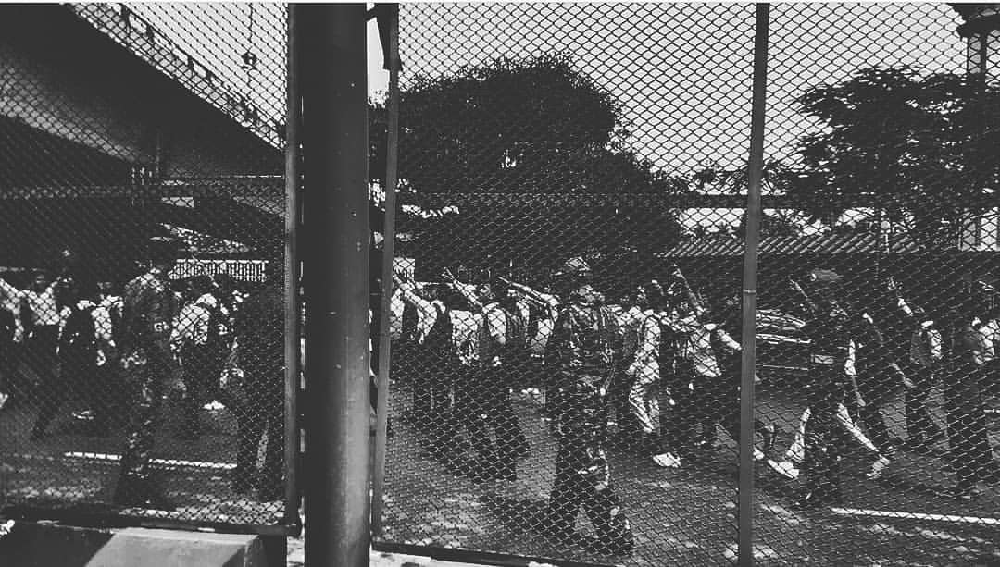
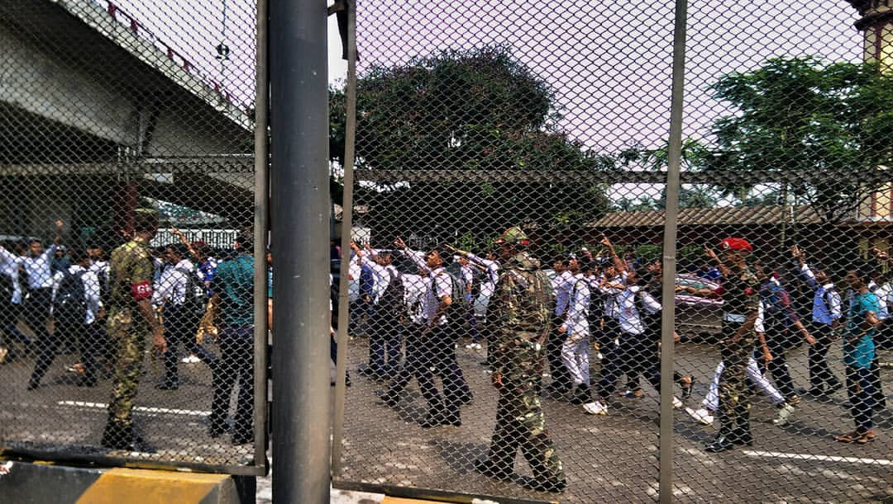
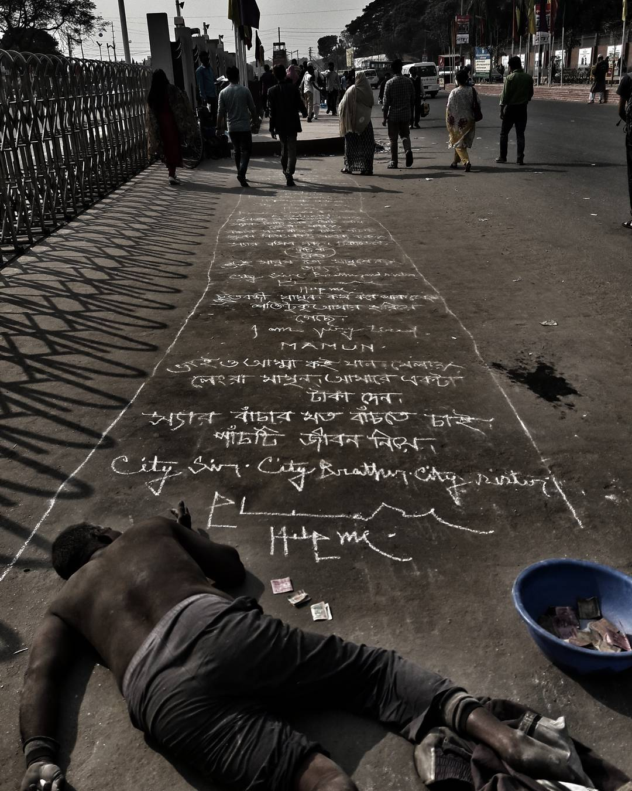
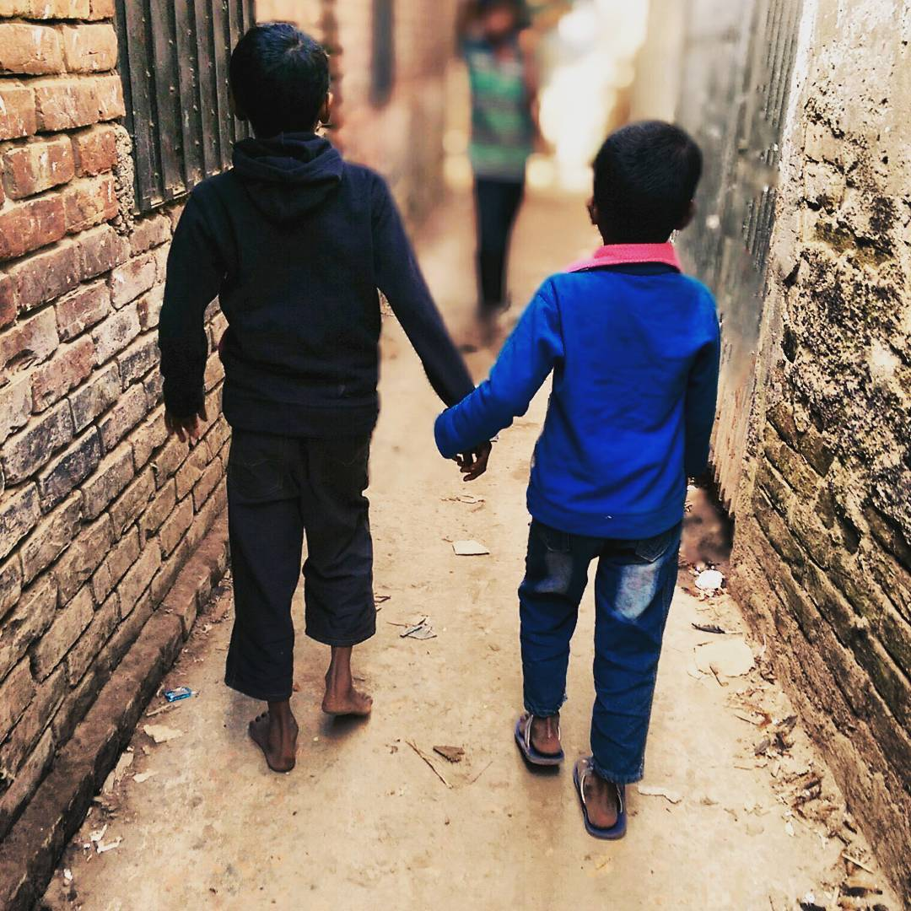
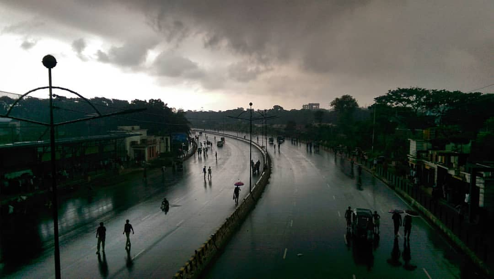
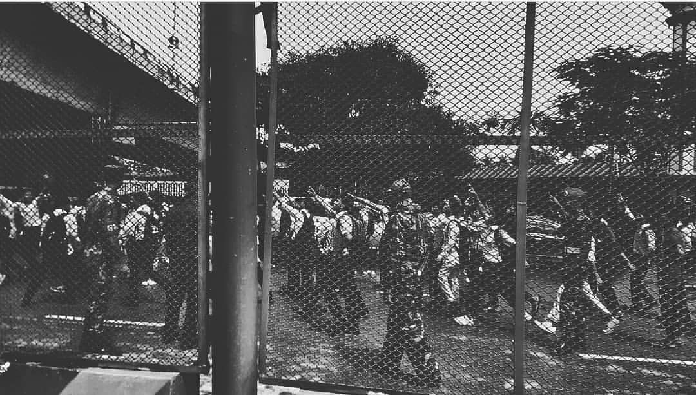
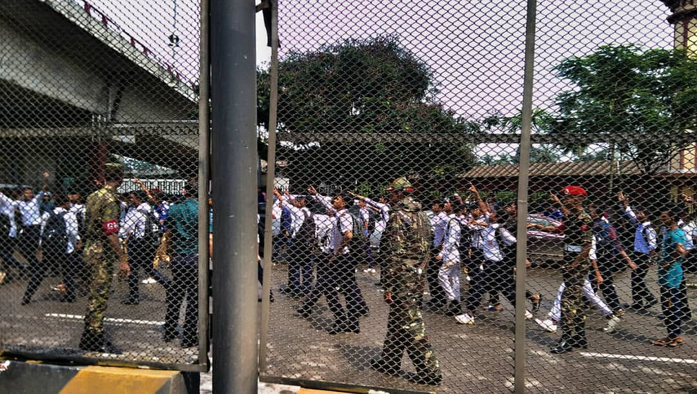

Hasin Ashraf Rana.
Cyber Security Engineer
About
Hey, thank you for visiting my page. My name is Hasin Ashraf Rana. I am currently studying my masters in Western Illinois University in Macomb. Prior to coming to USA, I was working as a cyber security professional at a financial organization for almost 3 years in Bangladesh.
Along with my professional experience I have my interest in research as well as writing, photography and ideas which closely resonates with philanthropy? I am also working with a orphanage back in my home country in which children’s struggles with daily food and cloths. If you have time then please share the page and if possible, donate for the kids.

Research Interest and Ideas
- 🔒 Software Security
- 🤖 AI Security
- 🦠 Malware
- ⚡ Zero-Day Attack
- 🔍 Digital Forensics
- 🛡️ Data Privacy
- 💰 Ransomware Attack
- 👥 Behavioral Aspects of Cybersecurity
- 🔥 Firewall
- 🧠 Deep Learning for Malware Detection
- 🌐 IoT and Network Security
- 🎓 Leadership, Compliance & Behavioral Aspects of Cybersecurity
- 🖥️ HCI & HCI Security
- 🏭 Cyber-Physical Security
Research Ideas
🤖 Understanding Human Action Intention for Robotics
Question: How do we enable robots to understand what actions a given person intends to perform?
-
Inspired by the book Three stages of dynamic brain cognitive model of understanding actions intention displayed by human body movements, which describes:
- Body Perception Stage: The brain processes information about body parts and shapes, using areas like EBA and FBA to recognize visual cues and distinctive features.
- Action Identification Stage: The brain differentiates observed actions, analyzes relationships, and uses the Mirror Neuron System (MNS) for spatial information and empathy.
- Intention Understanding Stage: The Mentalizing System helps us interpret others' mental states, beliefs, and desires, influenced by context and culture.
- Application: Visual sensors can help robots interpret human actions and intentions, improving human-robot interaction.
🦠 Research Ideas on Malware
-
Zero-Day Attack Prevention:
As a cyber security engineer, I have witnessed many attacks, but zero-day attacks are the most challenging. These occur when malware signatures are unknown and can masquerade as legitimate processes.
Idea: Develop mechanisms so only authenticated, legitimate files can access critical system processes, making it harder for zero-day malware to compromise devices. -
Ransomware Resilience for Financial Systems:
Cyber attacker groups often use ransomware to block transactions and demand payment.
Idea: Create security mechanisms to support banking and transactional systems, allowing business continuity even during attacks.
🧠 Psychology-Based AI Security System
I am also working on a psychology-based AI security system. Wish me luck!
Achievements
- Achieved 3rd position in national CTF Cyber Drill -2023 out of 60 teams.
- Achieved 4th position in national CTF Cyber Drill- 2022 out of 40 teams.
Orphanage
“Amar Khushi” Foundation (My Happiness)
About: Amar Khushi foundation has been established for more than a decade and has helped hundreds of children throughout the years. I have been working with the foundation close to a decade and currently it has children around the age of 3 to 9, both boys and girls. Food and clothing is a daily struggle for the kids.
- Bkash: 01758757897
- Bank Account: 2123209000000269 (UCB, Kafrul)
- If you want to donate from outside Bangladesh, please email me.
We are trying to educate the children regarding impactful skills which will help them when they leave the orphanage. If you have any ideas or a voluntary motive, please contact me as soon as possible. We will be working with companies in the coming days.
Gallery
Writing
- Currently Writing on a play/book named “Wondering around the Peral”. The Premise is a romantic coming of age realization of between two people. The work is almost done. Please email me for more information.
Summary
Previously worked as a SOC (Security operations center) analyst with more than 2 years of experience in integrating security related technologies according to the organizational business need. As an offensive security and SOC analyst, I look after the firewalls such as Checkpoint and Palo-alto to monitor suspicious networking activity and the IP's the attackers generally target, along with IBM Qradar, which focuses on the entire organization's network activities and abnormalities as per our self-designed playbooks. I also look after the Crowd strike, Symantec ecosystem, where I focus on day-to-day security incidents, from malware hunting to observing the system & application files malware tends to target, along with behavioral intrusion attacks. I observe malware’s behavior through sandboxing and real-life trends.
I have also done some certification on the topic of Cyber Security, Project management and UI/UX designing till now.
Click below to download the PDF version of my CV.
Download CVProfessional Experiences
Prime Bank LTD
Offensive Security Analyst & SOC Analyst | June 2022 - Present
- Provide identity access management for protecting sensitive enterprise system, assets and information from unauthorized access and use.
- Monitoring Crowstrike EDR, Fortimail along with Symantec ECO system including EDR, CAS, SEPM, Messaging Gateway, SIEM (IBM qradar & Resilient) .
- Create and review security products related RFP according to business and organizations requirement.
- Provide authorize user access through user credentialing, account creation/deletion, SSO, repository management, RBAC, ZT, T24 SMS Group review & PAM, VPN access along with monitor information linkage and traffic at brand and Dark/Deep web.
- Integrate new services at our existing banking IT environment through solution acquisition, define service integration scope, service-related technology infrastructure review and also conduct application risk assessment such as identifying & tracking technical and logical flaws like security vulnerabilities, compliance issues & business logic problems.
- Monitoring Credit card transaction on VISA Risk Manager (VRM) & configuring cross border card payment rule in & Mastercard Expert monitoring system (EMS) to detect, protect & prevent fraudulent attempt.
- Monitoring inbound and outbound messaging security including protection against latest messaging threats, detecting confidential information being used through best practice of security guidelines using fortimail.
- Improve organizational security posture by researching current trends from diverse online sources enhances resilience against evolving cyber threats.
TechForing Ltd
Jr. Cyber Security Engineer | Dec 2021 - June 2022
- Provided security solution incorporating NDAs (non-disclosure agreements) and digital forensics reporting aligns with organizational standards, safeguarding sensitive information and facilitating effective incident response to customer.
- Perform cybersecurity services like penetration testing, vulnerability assessment, hack recovery, Malware analysis, crime investigation, forensic investigation, incident response. dynamic security solutions based on a customer security needs from various online resources.
- Protects system by defining access privileges, control structures, and resources.
- Recognizes problems by identifying abnormalities; reporting violations.
American International University Bangladesh
Teaching Assistant | Jan 2021 - Aug 2021
- Educating students about fundamentals of networking and networking security tools like Security onion, Cisco packet tracer.
- Generating quiz and final term question & assessing Exam scripts.
Perspective
Here are some of my photography works. Enjoy the gallery below!
The world through my eyes
 








